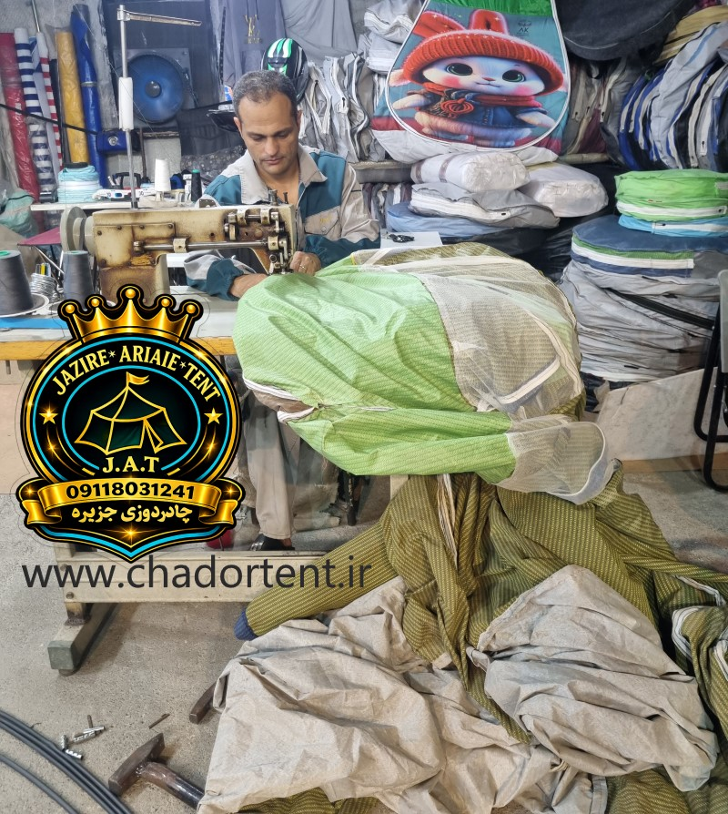

چادر برزنتی سفارشی
قیمت بر اساس ابعاد
برای سایهبان، پوشش تجهیزات، باغ، حیاط و استفادههای حرفهای، برزنت باید دقیق با اندازه و کاربرد پروژه هماهنگ باشد. در کارگاه چادردوزی جزیره، برش، تقویت و دوخت بر اساس نیاز شما انجام میشود.
- ✓ پارچه برزنت مقاوم و بادوام
- ✓ مناسب استفاده طولانیمدت
- ✓ ضدآب بودن قابل سفارش
- ✓ ابعاد کاملاً سفارشی
- ✓ تقویت درزها و نقاط حساس
- ✓ تولید مستقیم کارگاهی
🚚 ارسال به سراسر ایران | پاسخگویی همهروزه از ۸ صبح تا ۱۰ شب
توضیحات کامل چادر برزنتی
چادر برزنتی گزینهای مقاوم برای استفاده ثابت یا نیمهثابت است. نسبت به چادر مسافرتی سنگینتر است، اما دوام بالاتری در برابر آفتاب، باران و استفاده طولانی دارد. به همین دلیل برای باغ، حیاط، کارگاه و پوشش تجهیزات انتخاب مناسبی محسوب میشود.
مشخصات کلی
| کاربرد | باغ، حیاط، سایهبان، پوشش تجهیزات |
|---|---|
| جنس پارچه | برزنت مقاوم |
| ضدآب | قابل سفارش |
| ابعاد | کاملاً سفارشی |
| وزن | وابسته به ابعاد |
| محل تولید | کارگاه آمل |
مناسب برای
- استفاده در باغ و حیاط
- سایهبان و پوشش فضای باز
- کارگاه و انبار موقت
- پروژههای سفارشی و صنعتی